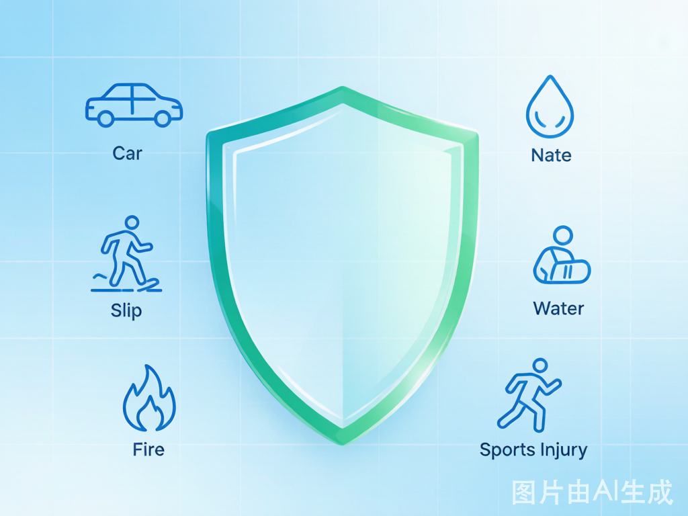
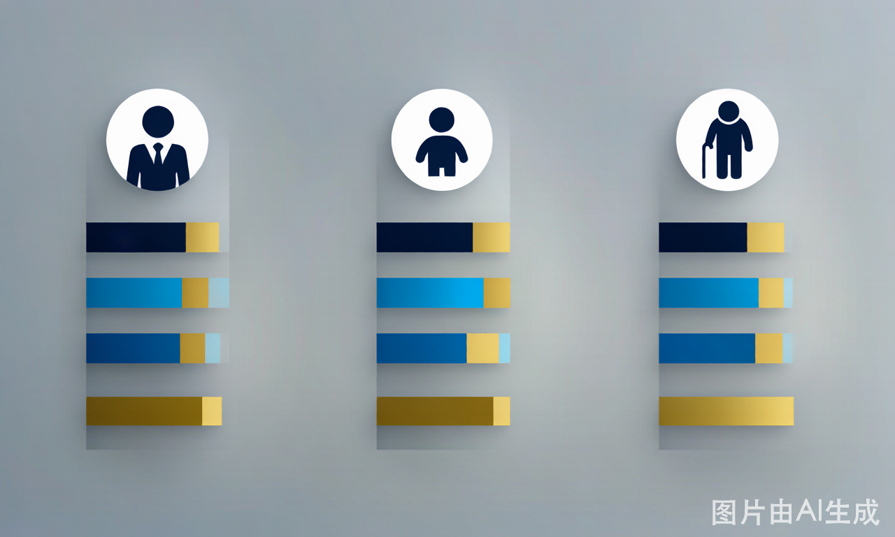

意外险怎么买？2025年成人/儿童/老人意外险全面推荐，最低59元/年起
意外险年交59元起，是杠杆最高的保险品类。深度拆解成人/儿童/老人三大人群选购要点，含真实理赔案例+5个致命误区，看完不再买错。
**摘要：** 意外险年交几十到几百块，保几十万身故——杠杆最高的保险，没有之一。但99%的人不知道：**一年期意外险的隐藏条款多到离谱**——有的不赔高空坠落、有的不赔电动车事故、有的猝死条款形同虚设。本文用真实理赔案例，手把手教你避开所有坑。
真实案例：299元的意外险，差点一毛钱没赔到
**人物：** 赵阳，34岁，杭州程序员，骑电动车通勤。
2024年11月一个雨天，赵阳骑电动车上班途中被一辆逆行的外卖电动车撞倒，左腿骨折，住院7天。总花费：手术费+住院费+康复治疗 = 36,800元。
赵阳心想，自己年初买了一份299元/年的意外险，保额50万，应该够赔了。结果保险公司的回复让他傻了眼——
**"本次事故属于交通事故，医疗费用应优先由对方交强险赔付。对方赔付后剩余部分，扣除免赔额后按80%报销。"**
而撞他的外卖小哥没有交强险（电动车不属于机动车），也没有赔偿能力。
最终，赵阳走了3个月维权流程后：保险公司报销了26,400元（36,800 - 100元免赔额）× 80% = 29,360，但因为"非社保用药"扣除了一部分，实际到手**仅19,800元**。赵阳自己掏了17,000元，相当于保费59倍的亏损缺口。
**问题出在哪？** 赵阳买的是没有"不限社保用药"条款的意外险。如果花多30块升级版本，他的36,800元可以全部报销。
意外险的"意外"到底怎么定义？
很多人以为买了意外险就万无一失——错了。保险公司对"意外"有极其严格的定义，必须同时满足四个条件：
| 条件 | 含义 | 赔 | 不赔 |
|---|---|---|---|
| **外来性** | 伤害来自身体外部 | 被车撞、狗咬、摔倒 | 心梗、脑溢血（内部疾病） |
| **突发性** | 瞬间发生的事件 | 交通事故、中毒 | 长期劳损（腰椎间盘突出） |
| **非本意** | 不是自己故意的 | 正常骑行被撞 | 酒驾、打架斗殴 |
| **非疾病** | 不是因疾病直接导致 | 摔伤导致骨折 | 骨质疏松自然骨折 |
⚠️ **最大误区：猝死算意外吗？** ——严格来说不算！猝死本质是心源性或脑源性疾病突发，属于"疾病"，不在标准意外险保障范围。**如果你需要猝死保障，必须买明确包含"猝死责任"的版本**（通常加20-50元）。
成人意外险：5款热门产品深度横评

成人意外险的核心不是看身故保额有多高，而是看**意外医疗保障**和**免责条款**。
选购5个关键指标
| 指标 | 优选标准 | 为什么重要 |
|---|---|---|
| 意外医疗保额 | ≥5万 | 骨折手术费就要3-5万 |
| 是否含自费药/进口药 | **必须含** | 赵阳的教训——不含自费药等于打7折 |
| 免赔额 | 0或100元 | 免赔额500以上的直接pass |
| 报销比例 | 100%（社保内+自费药） | 低于100%的等于每次理赔都打折 |
| 猝死保障 | 可选，但职场人建议加 | 40岁以下猝死率年增12%（2024年卫健委数据） |
5款产品一表对比（2025年热销）
| 产品 | 年保费 | 身故保额 | 意外医疗 | 猝死保障 | 自费药 | 推荐指数 |
|---|---|---|---|---|---|---|
| 小米综合意外险 | ¥59 | 10万 | 1万(社保内) | 无 | ❌ | ⭐⭐ |
| 人保大护甲5号 | ¥96 | 50万 | 5万(含自费药) | 30万 | ✅ | ⭐⭐⭐⭐⭐ |
| 平安小蜜蜂3号 | ¥156 | 50万 | 5万(不限社保) | 无 | ✅ | ⭐⭐⭐⭐ |
| 大地i护甲2025 | ¥198 | 100万 | 8万(含自费药) | 50万 | ✅ | ⭐⭐⭐⭐⭐ |
| 安联无忧保 | ¥285 | 100万 | 5万(全球保障) | 50万 | ✅ | ⭐⭐⭐⭐ |
**推荐结论：** 预算有限选**人保大护甲5号**（96元/年，意外医疗5万含自费药+猝死30万），是目前性价比最高的成人意外险。收入较高的职场人选**大地i护甲2025**（198元/年，保额100万+含猝死50万）。
儿童意外险：核心不是身故保额，而是这个

银保监会规定：未成年人身故保额**10岁以下最高20万，10-18岁最高50万**。所以儿童意外险的保额设计得再高也没用，死命选高保额是错误策略。
**正确策略：把重点放在意外医疗。**
儿童意外险选购清单
| 选购要点 | 为什么重要 |
|---|---|
| 不限社保用药 | 儿童骨折常用的可吸收螺钉、进口钢板都属自费 |
| 0免赔、100%报销 | 小孩磕碰一次几百块，免赔额高了等于白买 |
| 含疫苗接种意外 | 婴幼儿每年打10+针疫苗，偶有异常反应 |
| 含监护人责任险 | 小孩打碎邻居玻璃、划伤别人车，保险赔 |
真实案例：一针疫苗的6万元教训
2024年3月，郑州的周女士带1岁半的儿子接种疫苗后，孩子出现严重过敏反应，住院ICU 5天，花费63,000元。她买的普通儿童意外险（¥60/年）**不包含疫苗接种意外**，一毛钱没赔到。
如果当初选择含疫苗意外的版本（¥78/年，只贵18元），这6.3万全赔。
推荐产品
| 产品 | 年保费 | 意外医疗 | 含疫苗 | 推荐 |
|---|---|---|---|---|
| 平安小顽童尊享版 | ¥78 | 2万(不限社保/0免赔/100%) | ✅ | ⭐⭐⭐⭐⭐ |
| 平安小顽童基础版 | ¥60 | 1万(不限社保) | ❌ | ⭐⭐⭐ |
| 人保学平险 | ¥100 | 1万(社保内) | ❌ | ⭐⭐ |
老人意外险：60岁以上怎么买？
老年人意外险最大的坑是——**很多产品70岁以上停止投保**。如果父母今年69岁买了一份，明年续保时可能直接被拒。
60岁以上买意外险的3个关键
| 关键点 | 说明 | 正确做法 |
|---|---|---|
| **投保年龄上限** | 大部分产品70岁停售 | 选可续保到80岁+的产品 |
| **职业限制** | 退休后做兼职/干农活可能被拒赔 | 如实告知职业变化 |
| **骨折津贴** | 老人摔倒80%是骨折 | 选含骨折津贴的版本 |
真实案例：72岁李阿姨的2万元骨折
2025年1月，成都72岁的李阿姨在买菜路上摔倒，股骨颈骨折，住院27天，手术费+康复共计28,400元。她买的是平安孝心卡（¥388/年，保额20万，意外医疗2万，含骨折津贴5千，含住院津贴¥100/天）。
最终理赔：
- 意外医疗报销：19,800元（28,400-自费药约8,600元，实际最高赔付2万）
- 骨折津贴：5,000元（一次性给付）
- 住院津贴：2,700元（27天×100元）
- **合计赔付：27,500元**，自己只花了900元
李阿姨的女儿感叹："388块的保险，赔了27,500块，71倍的杠杆，这是我们家买过最值的保险。"
推荐产品
| 产品 | 年保费(70岁) | 最高投保年龄 | 骨折津贴 | 推荐 |
|---|---|---|---|---|
| 平安孝心卡2025 | ¥388 | 80岁 | ¥5,000 | ⭐⭐⭐⭐⭐ |
| 太平洋好意保 | ¥298 | 75岁 | ¥3,000 | ⭐⭐⭐⭐ |
| 人保老年意外险 | ¥198 | 70岁 | 无 | ⭐⭐⭐ |
5个致命误区，99%的人都不知道
误区一："意外险什么意外都赔"
**真相：** 意外险有厚厚的免责条款。常见不赔的包括：
- 高风险运动（潜水、攀岩、跳伞——除非你买的是"高风险运动版"）
- 酒后驾车（即使你是被撞的一方）
- 从事违法活动导致的意外
- 战争、核辐射等不可抗力
**教训：** 2024年一位驴友在川西攀岩坠亡，他的意外险（¥298/年、保额100万）拒赔——因为没有买"高风险运动附加险"。如果加¥80/年升级版本，100万照赔。
误区二："意外险可以叠加买，出事了多份都赔"
**真相：** 身故/伤残可以叠加（买三份各50万，赔150万）。但**意外医疗不能叠加**——实报实销，总报销额不超过实际花费。买再多报销型意外险，花10万最多只能报10万。
误区三："年交几百块的意外险，保障肯定不够"
**真相：** 够的！以人保大护甲5号（¥96/年）为例：
- 身故/全残：50万
- 意外医疗：5万/次（不限社保+自费药）
- 猝死：30万
- 民航意外：额外300万
96块钱买到的是**5,200倍杠杆**（身故保额÷保费）。意外险是保险中杠杆最高的品类，没有之一。贵的不一定好，便宜的不一定差。
误区四："单位已经买了团体意外险，自己不用买"
**真相：** 两个问题：①团险保额通常只有1-5万，覆盖不了重大意外；②离职后保障消失，而重新投保时如果年龄大了或被查出健康问题，可能被拒保。**意外险和健康状态无关**，但有些意外险也看职业——换工作后要主动告知。
误区五："意外险买长期的好，稳稳的"
**真相：** 恰恰相反！长期意外险（20年/终身）保费是一年期的**5-10倍**，保障内容还差不多。一年期意外险每年都有新产品出来，竞争激烈不断降价加保——2024年比2020年保费降了约30%，保额还涨了。**意外险就该买一年期的，别被"长期稳定"忽悠多花钱。**
常见问题 FAQ
**Q：意外险和百万医疗险有什么区别？需要都买吗？**
A：非常需要都买！两者覆盖不同场景：
| 场景 | 意外险 | 百万医疗险 |
|---|---|---|
| 摔伤骨折急诊门诊 | ✅ 赔 | ❌ 不赔(没住院) |
| 车祸住院5天花费3万 | ✅ 赔 | ✅ 赔 |
| 癌症住院30天花80万 | ❌ 不赔(非意外) | ✅ 赔 |
| 心梗抢救住院 | ❌ 不赔(非意外) | ✅ 赔 |
意外险的独特价值在于覆盖**门诊和急诊**（百万医疗险只报住院），小伤小碰几百块钱的急诊费也能报。两者互补，缺一不可。
**Q：多份意外险可以叠加赔付吗？**
A：分情况。——**身故/伤残**：可以叠加。买三份各50万，意外身故赔150万。——**意外医疗**：不能叠加。总报销金额不超过实际医疗花费。花10万最多报10万，买10份也如此。
**Q：出国旅游需要额外买意外险吗？**
A：**必须额外买。** 市面上绝大多数普通意外险的保障范围仅限中国大陆（不含港澳台）。出国需要专门的境外旅游意外险，核心看两点：①是否包含紧急医疗转运（国外叫救护车可能就上万）；②是否包含遗体遣返。推荐安联或美亚的环球系列，7天东南亚约¥50-80。
**Q：高危职业（建筑工人、外卖骑手）能买意外险吗？**
A：可以，但需要买**高危职业专属意外险**，价格比普通版贵2-5倍。普通意外险的"职业限制"通常是1-3类（办公室、销售人员），4-6类（建筑、运输、机械操作）需要专门产品。买错职业类别，出事了保险公司可以以"未如实告知职业"拒赔。
*免责声明：本文仅提供信息参考，不构成投保建议。具体保障内容、免责条款以保险合同为准，购买前请仔细阅读保险条款。产品信息截止2025年6月，保费和保障内容可能随市场调整。*